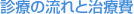

指定自立支援医療機関（育成医療・更生医療） 顎口腔機能診断医療機関


治療費については、不正咬合の種類や来院時の年齢や難易度によって若干の違いが生じますので、初診時の相談においてご説明をします。相談は無料ですので、お気軽に来院してください。
矯正歯科治療には、健康保険が適用されません。ただし、唇顎口蓋裂の患者さんなどや、顎変形症の患者さんは、健康保険が適用になります。外科的矯正治療は、矯正治療・手術・入院すべて健康保険適応です（顎口腔機能診断施設の認定を受けたクリニックでのみで可能：当院はその認定を受けた施設です）。
当院の治療費は、北海道大学歯学部付属病院をはじめとした国立大学病院の料金（平成3年度版）に準じて設定しております。
| 矯正治療に共通してかかる料金 | |
|---|---|
| 検査料 | 30,000円 |
| 診断料 | 15,000円 |
| 基本施術料 | 150,000円 |
| 顎関節の検査が必要な場合は別途50,000円。 CTの検査には別途10,000円。 MRIの検査は主に保険適応です。 外科的矯正治療はすべて健康保険の適応になります。 |
|
| 矯正装置料（不正咬合の種類によって異なります） | |||
|---|---|---|---|
| リンガルアーチ | 35,000円 | マルチブラケット（各種） | |
| チンキャップ | 30,000円 | 金属 | 250,000円 |
| 上顎骨牽引装置 | 70,000円 もしくは 40,000円 |
審美ブラケット （セラミック等） |
280,000円 |
| 拡大装置 | 45,000円 | リンガルブラケット | 380,000円 |
| スライディングプレート | 20,000円 | インビライン（マウスピース矯正） | 応相談 |
| ヘッドギアー | 30,000円 | 調整料 | |
| パラタルバー | 25,000円 | 顎整形治療（第1段階） | 4,000円 |
| タングガードナー | 35,000円 | マルチブラケット治療（第2段階） | 5,000円 |
| リテーナー（片顎） | 25,000円 | 保定中（後戻りを防ぐ治療） | 3,000円 |
| 顎位安定型プレート | 30,000円 | 家族割引があります。すべての段階での調整料が1人一律3,000円になります。 | |
なお当院では消費税を別途頂いておりません
領収書は、確定申告時に医療費控除を受ける際に必要ですので、大切に保存してください。⇒Q&A 医療費控除
外科的矯正治療のほかに、以下の疾患に健康保険が適応されます
- 唇顎口蓋裂の手術後の矯正治療
- ゴールデンハー症候群（鰓弓異常症含む）
- 鎖骨・頭蓋骨異形成
- クルーゾン症候群
- トリチャーコリンズ症候群
- ピエールロバン症候群
- ダウン症候群
- ラッセルシルバー症候群
- ターナー症候群
- ベックウィズ・ヴィードマン症候群
- ロンベルグ症候群
- 先天性ミオパチー
- 顔面半側肥大
- エリス・バァン・クレベルド症候群
- 軟骨形成不全症
- 外胚葉異形成症
- 神経線維腫症
- 基底細胞母斑症候群
- ヌーナン症候群
- マルファン症候群
- プラダウィリー症候群
- 顔面裂顎変形症の手術前後の矯正治療